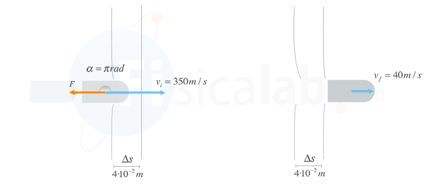

Calcular fuerza con Teorema Energía Cinética en disparo e impacto

Problema
Una bala impacta contra un panel de corcho a 350 m/s y tras atravesar sus 4 cm de grosor la bala sale a 40 m/s. Determina la fuerza que la pared opone al paso de la bala.
Datos:
mbala = 75 g
vi = 350 m/s
vf = 40 m/s
Espesor panel => espacio recorrido por la bala en el interior del mismo => ∆s = 4 cm = 4·10-2 m
Consideraciones:
-Supondremos que la fuerza que opone el panel del corcho al paso de la bala es constante.
-Para el caso que nos ocupa podemos suponer que la fuerza es la única fuerza que actúa sobre el cuerpo, lo cual nos permitirá aplicar el teorema de la energía cinética
-La fuerza y el desplazamiento de la bala tienen sentido contrario ( α=π rad ); , como puede verse en la figura.